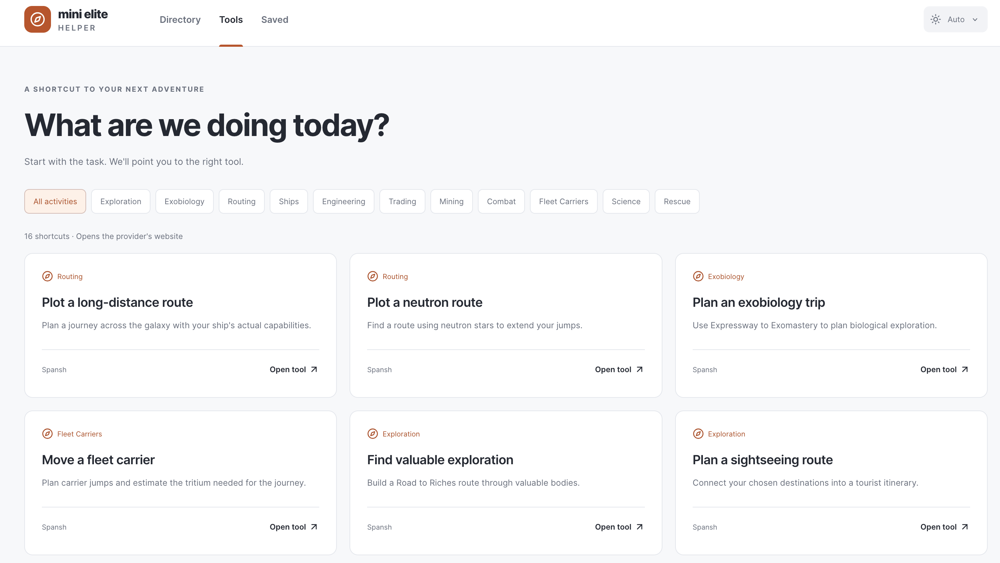

OnTimely
macOS appA reminder app that helps you start tasks before their deadlines.
Hello, I’m
I make apps, websites, and games.
I’m a student interested in computer science and design.
Things I’ve been making.
A reminder app that helps you start tasks before their deadlines.

A place to find the community tools you need in Elite Dangerous.

A guessing game about how long things take.
I’m Simon, a student interested in computer science and design. I also play piano and spend time in space games.
More about me →